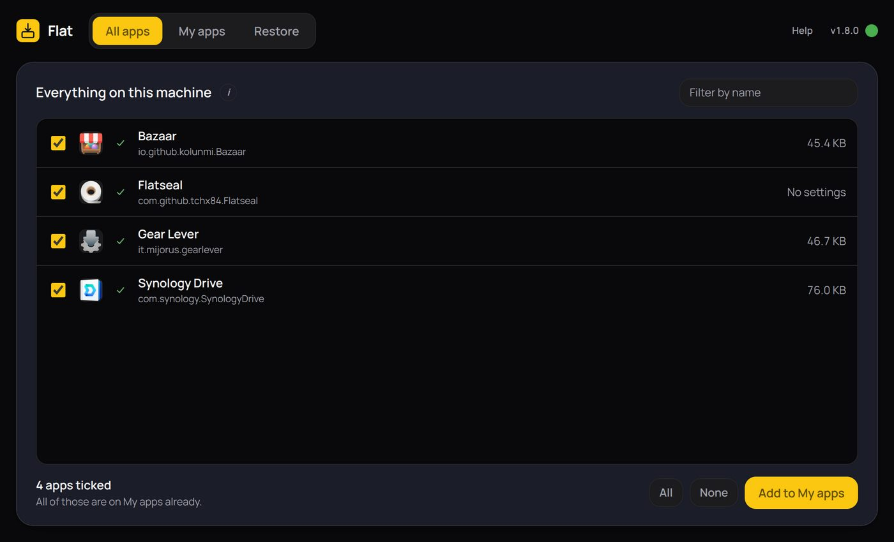
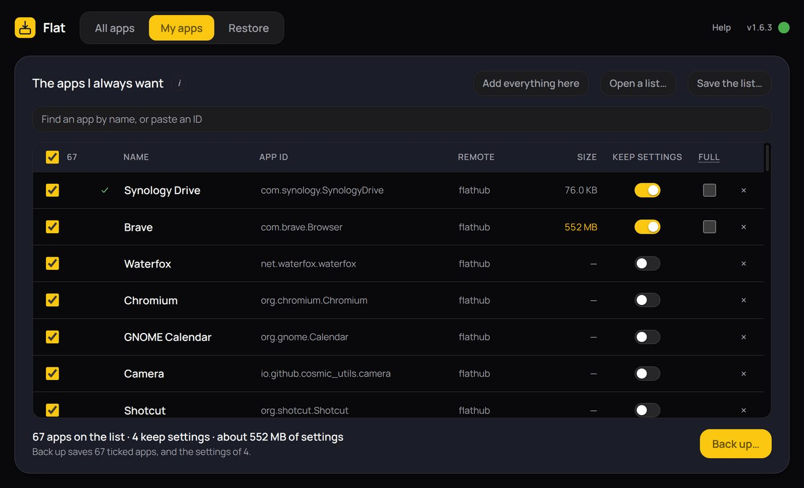
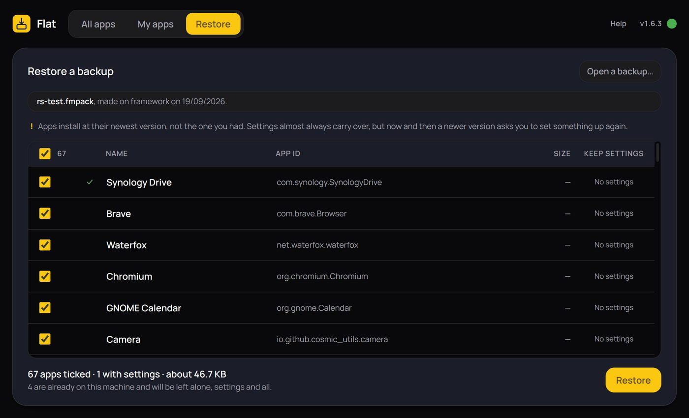

Flatpak is not installed here
Install it with your distribution's package manager, then reopen Flat.
Install it with your distribution's package manager, then reopen Flat.
Every Flatpak app installed on this machine, with the size of the settings and data each one keeps. Tick the ones you want and press Add to My apps. They arrive there as Fresh installs; on My apps you choose which of them keep their settings.
Apps already on My apps say so, and adding them again changes nothing.
No Flatpak apps found on this machine.
Looking at what is installed…
Your list of apps. Switch Keep settings on for the apps whose settings you want on the next machine. Untick anything you want left out, then press Back up…: the file carries the ticked apps, and the settings of the ones switched on.
Apps join the list from All apps, or from the search box, which takes a name or a pasted ID.
A profile copied while its app is open comes out locked or half-written.
Your list is empty. Search above, or press Add everything here to start from what this machine already has.
Flathub is not set up on this machine yet.
Almost every app comes from it. Nothing can be searched for or installed until it is added.
Apps install at their newest version, not the one you had. Settings almost always carry over, but now and then a newer version asks you to set something up again.
Flat moves your Flatpak apps to a new computer, with their settings if you want them. It never copies the apps themselves: on the new computer each one is installed fresh from Flathub, at its newest version, and then your settings are put back into it.
.fmpack. Put it on a USB stick, a server, anywhere.Everything installed on this computer, with how much each app keeps. Tick the ones you want — All ticks every one — and press Add to My apps. A small tick beside a name means it is on My apps already.

Your list — the apps you want on your next computer. Each row says:
Everything starts ticked. Untick what you want left out, press Back up… and choose where to save. If an app whose settings are going is open, Flat names it and waits — a browser copied while running comes out broken. Check again looks once more; Close them for me closes it.
To add an app you do not have yet, search for its name or paste its ID.

Browsers and apps built like them keep a lot that they can fetch again by themselves: copies of websites for offline use, speeded-up code, graphics caches, block lists and their own downloaded parts. On one real Brave browser that was 400 MB of its 950.
Unticked (normal): Flat leaves those out. Your bookmarks, passwords, history, open tabs, extensions and their settings, and what websites have saved for you all come along. The browser rebuilds the rest the first time it runs, which can make that first start a little slower.
Ticked: the app's whole folder goes, cache and all, exactly as it is. Use it if something did not come back right, or for an app that is not a browser and you want to be sure of everything.
The tick only appears where it makes a difference. The Size column changes as you tick it, so you can see what it costs.
Flat finds a backup on its own if it is beside Flat or in Downloads; otherwise press Open a backup…. You get the same list, with Keep settings already on for every app whose settings are in the file. Untick anything you do not want here and press Restore.
Each app is installed from Flathub first, then closed, then its settings are put back — in that order, because doing it the other way round is what makes an app open looking brand new. Nothing needs a password.
An app that is already on this computer is left exactly as it is, settings and all. Anything that goes wrong is named on its own line, and Flat carries on with the next app.

The small dot beside the version number, top right, keeps Flat up to date:
More at flat.lightmorphic.com.
Starting…